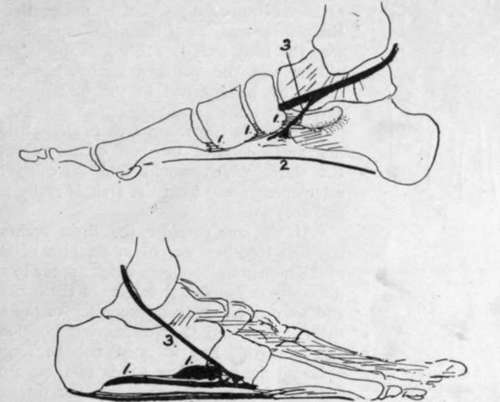
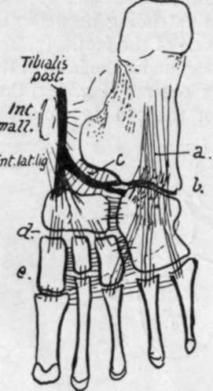

The Foot. Part 3
Description
This section is from the book "The Anatomy Of The Human Skeleton", by J. Ernest Frazer. Also available from Amazon: The anatomy of the human skeleton.
The Foot. Part 3
The outer arch is lower than the inner, and low arches are much harder to hold up (Fig. 141) by intersegmental ties and ties between the pillars ; so we would expect to find the ligaments on the plantar side of the outer arch much stronger than those under the inner arch, and much stronger connections between the tuberosity of the os calcis and the outer toes, whereas the strap passing under such an arch would not be affected in its action, although more work would probably be thrown on it. And this is what is found in the low external arch : the long and short plantar ligaments connecting the os calcis, cuboid, and outer metatarsals are the strongest in the foot ; the fascia is very thick and the muscles largely ligamentous along the outer side of the sole, and the tendon of the Peroneus longus passes under the arch to be fastened away from it, acting under the highest part arid being very strong. In this, then, we find some explanation of the occurrence of such strong ligaments and ligamentous " degeneration " of muscles in the outer moiety of the foot.
Fig. 142.-Schemes of the supporting structures in the foot, for comparison with the last figure. I, i, i, are ties between the segments ; 2, between the pillars ; 3, strap-like support passing under the arches. In the low outer arch 1 and 2 are stronger.
Turning now to the transverse arch, we find that it is highest in the front part of the tarsus. If, then, the segments could be tied together here, they would act under the best possible conditions for holding up the structure.
So we find strong transverse ligamentous fibres in this situation, fastening together the cuneiforms, the cuboid, and the scaphoid, and such fibres are necessarily on the plantar side of the bones and between them, nearer their plantar than their dorsal parts, for the nearer the ties are to the concavity the more effectively do they hold up the arch : thus we might almost expect to find that the articular surfaces between the bones arranged transversely would be nearer the dorsal than the plantar margins of their side aspects. In the same way the high arch is easily held by ties between its pillars, and the peroneal tendon passing under one pillar to be fastened to the other acts well as an extensible tie.
Thus this transverse arch is easily held up by the first and second of the two classes of supports, and the third, which would find difficulty in securing attachment away from the arch, is really not required and does not exist.
If we now consider the three arches and their supports together, we obtain an idea of the meaning of the numerous ligaments which appear to run in every direction on the plantar surface of the bones (Fig. 143), and we can divide them according to the three arches they support and their consequent position, direction, and strength. But it must not be forgotten that, although the supporting bands of these arches can be analysed separately in this way, the three sets are so connected naturally in function, and in some ways in community of support, that failure in one arch will of necessity lead to consequent strain and failure in the others: in practice, one arch should never be considered to stand alone.
Observe now that the inner arch does not rest at its front end equally on the heads of the three inner metatarsals : the first metatarsal is the main weight supporter, the others, like the rest of the metatarsus, acting more as balancers and only taking weight such as is necessary in keeping the balance of the body on the " ball of the big toe." Again, on the outer side the arch, in spite of its strong ligaments, is so low that it will flatten down, under pressure, enough to bring the metatarsal edge on the ground, and the outer arch is then shortened, so that its anterior pilar becomes practically the base of the fifth metatarsal. Under these circumstances the arch of the metatarsus, not having to carry much weight, does not require strong ligamentous support : it can be easily restrained from splaying out by transverse connections at the distal end, and here we find the intermetatarsal transverse ligament connecting the plantar surfaces of the heads of the bones, with the Adductor transversus muscle.
Fig. 143.-Scheme to show the general arrangement of ligaments. These can be divided into those of the transverse and longitudinal groups. The transverse fibres are found in the highest part of the transverse arch, where they can exercise most effect ; thus they are found connecting the cuneiforms, scaphoid, and cuboid, and their lower fibres connect the metatarsals. The longitudinal fibres are strongest along the outer arch, where a. and b. are long and short plantar ligs., while the shorter bands on the inner side include c, calcaneo-sca-phoid, d., scapho-cuneiform, and »., weaker cuneiform-metatarsal fibres. The internal lateral lig. reaches the sustentaculum by its middle fibres, and in front of this runs into the calcaneo-scaphoid set and thus into the scaphoid ; observe that the tendon of Tibialis posticus sends its expansion to the cuboid under this part and thus supports the highest part of the inner arch.
Astragalus (Figs. 144 and 145).
Consists of body, neck and head. The body carries a concavo-convex upper articular surface for tibia, continuous with inner and outer malleolar facets on the sides : the outer facet, for the fibula, is longer and more vertically directed.
Lower aspect of body rests, through an oblique concave articular surface, on the os calcis : internal to this and in front of it is the interosseous groove which completes the sinus tarsi, separating the articular under surface of the body from the articular head. The depth of this groove causes the constriction of the neck to be more apparent below and externally : many vascular canals mark the bone in this sulcus.
Continue to: